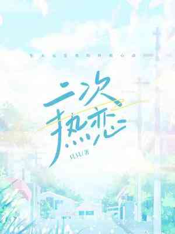

Cheng Huai X Jiang Yun
Seme amable y considerado X Uke para personas con discapacidad visual
Antecedentes: Legalización del matrimonio entre personas del mismo sexo, uke es dos años mayor que algunos
Conmovedor día a día de la pareja
Siempre serás mi último latido